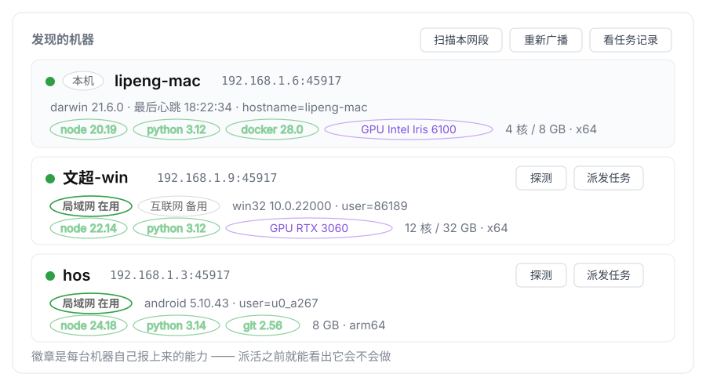

让局域网里的几台电脑自己找到彼此，然后互相派活。
装上就有。不用配对码、不用填 IP、不用装 Tailscale。
在 Mac 上说一句"这个交给 Windows 那台去跑"，就真的跑过去了。
零配置发现 双向派发 跨网络可用
你手上有几台机器，每台都装了 DSH：一台 Mac 写代码，一台 Windows 要部署， 手机上还挂着一个。你想"在 A 上开发完，让 B 去部署"。
以前的做法是：查 IP、开 SSH、把上下文复制过去、再手动接上下文回来。 来回几次就懒得用了。
装了这个插件之后，两台机器自己就发现了对方，侧栏多出一个 Mesh 面板。 你只要对 agent 说"派给 Windows 那台"，剩下的它自己做 —— 包括把结果送回来。
dsh plugin add dsh-plugin-mesh
在 DSH Desktop 自带的终端里执行（托盘/菜单 → 终端）。
其它 profile 用普通终端就行：dsh plugin --profile web add dsh-plugin-mesh
插件只在启动时加载，装完必须重启一次。
看到别的机器 = 成功了。看不到？看下面的 「看不到对方怎么办」。

侧栏的 Mesh 面板里，每台机器会显示：
局域网和互联网各是一条路，任何一条通就算可达。当前走哪条、另一条是不是备用， 面板上都标出来。真正断网的时候，你不需要做任何事。
| 常见做法 | 这里 |
|---|---|
| 手动填对方 IP 和端口 | 同一个局域网里自动发现 |
| 配配对码 / token 才能连 | 默认不需要（想要也能开） |
| 只能单向发命令，结果自己接 | 双向：结果会送回原来那场对话 |
| 要装 Tailscale 客户端才能跨网 | 插件自带用户态节点，按平台自动下载 |
| 断网了才发现备胎没配好 | 局域网通着的时候也照探备选通道 |
最后一条多说一句：很多方案是"局域网断了才去试备份通道"，结果第一次真断的时候才发现那条压根没通。 这里会在局域网正常时也周期性探测，所以备选通道是验证过的。
按顺序排查这三点：
45917（TCP）吗？组播要用 45892（UDP）。组播常被路由器或企业网络挡住。挡了也不影响使用 —— 点 Mesh 页面上的 「扫描本网段」主动扫一次即可。
默认不需要。局域网里谁都能被看见，这是有意的设计 —— 先让你看见机器，
再决定要不要和它打交道。如果你在不可信的网络上，可以在配置里打开
requirePairing，那样通信要带一个共享密钥。
不用。跨互联网那条通道用的是插件自带的一个小程序（用户态 Tailscale 节点）， 按你的系统自动下载，不需要 Go、也不需要 Tailscale 客户端。你只需要在设置里 粘一次授权码。
多半是系统省电把后台杀了，不是插件的问题。去系统设置里把 DSH 加入 电池优化白名单 / 允许后台运行。国产 ROM 通常还有一个额外的 「允许自启动」开关。
有些网络把下载源全挡了。这时可以在同网段找一台已经拿到文件的机器当镜像，
把地址填进配置的 tsnetDownloadSources 即可。
发现是公开的。同一局域网里谁都能看见你这台机器 —— 这是有意的： 先让你看见别人，再决定要不要真的打交道。
派任务默认不校验密钥。也就是说，同一网络里能连上 45917
端口的人，都能给你派一条任务，而这条任务会唤醒你机器上的 agent
去执行。家里的局域网一般可以接受；但在咖啡厅、宿舍、公司这类不可信网络，
请打开 requirePairing，并把两台机器的配对码设成同一个
—— 之后没有这个码的请求会被直接拒绝。
还要说清楚：配对码是放在 HTTP 头里明文传的。它挡的是"网络里冒出来的
陌生设备"，不挡"有人在抓包"。它存在本机
~/.dsh/mesh/state.json（权限 0600），不会出现在组播广播里。
| 方式 | 命令 |
|---|---|
| npm（推荐） | dsh plugin add dsh-plugin-mesh |
| 从源码 | git clone … && ./install.sh |
| 本地目录 | dsh plugin add /path/to/dsh-plugin-mesh |
推荐第一条：它不碰 git clone，而 github.com 的 git 端点
在国内经常被重置，是首次安装最常见的失败原因。
用着有问题、或者有想加的功能，直接发邮件或在 Issues 里说都行。